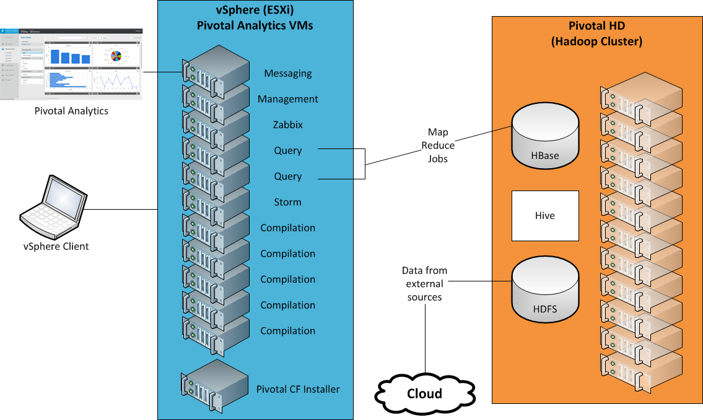
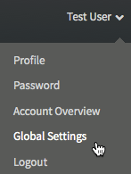
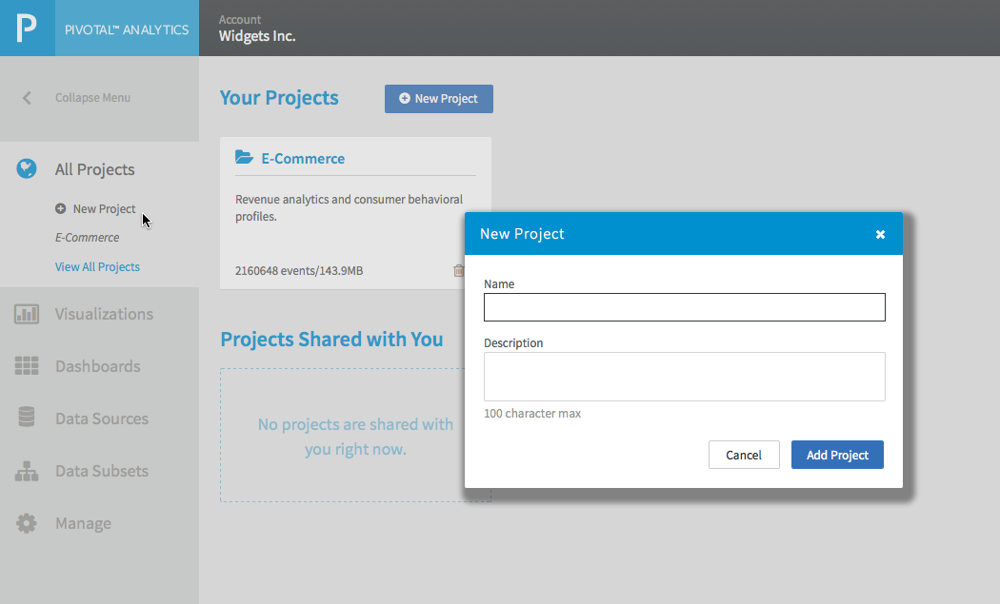
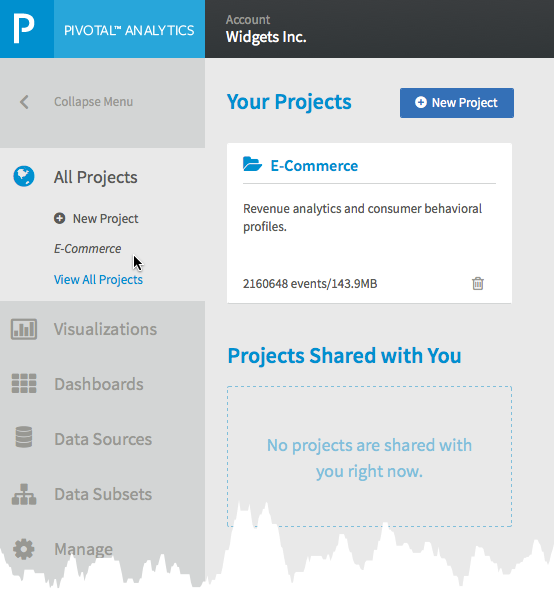
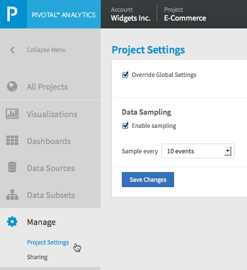

System Architecture
??diagram needs work

Global Settings
To configure global settings:
- Click the user name drop-down list in the upper-right corner and select Global Settings .
 Configure the following settings that apply to all projects in your Pivotal Analytics application:
Setting Description Data Sampling Data sampling allows you to limit the number of events ingested by Pivotal Analytics for analysis. When you set this sampling interval, only events on the interval are processed. For example, set the Sample every drop-down list to 10 to process only every 10th record of your data. You can also choose intervals of 100, 1000, 5000, or 10000 events.
You can also override the global setting for Data Sampling for each project. See Changing Project Settings.
Data Search Sets the period of time used for searching data in Canvas View or Auto Charts view. Only events within the specified time period are included in the search results. You can chose Day, Week, Month, or Year. Status Notifications Sets the type of notifications sent from Pivotal Analytics. Choose one or both of the following:
- By Email—Sends email notifications to the email address defined in the profile.
- On Browser —Displays notifications in the Web browser where Pivotal Analytics is running.
??do I need to add this, which is in gui: Note: To enable notification on Firefox browser, enter 'about:config" in the browser's address bar, and set "network.websocket.allowInsecureFromHTTPS" to true. Save your changes.
- Click Save Changes.
Managing Projects
A project is a grouping of your data sources and data visualizations of that data. You can preform the the following actions to manage your projects:
Add a new project
To add a new project:
- Click the Home/All Projects button in the left menu bar and select New Project.
 - Enter a name and description for your project.
- Click Add Project.
Your new project is created.
For information about adding data sources, see Data Source Management Guide.
Changing Project Settings
To override the global setting for Data Sampling for a project:
- Select a project by clicking the Home/All Projects icon in the left menu bar and click on a project name.
 - Click the Manage icon in the left menu bar.
- Click Project Settings.
 - Select Override Global Settings.
- Enable or disable sampling by checking or unchecking Enable sampling.
- Set the number of events to sample using the Sample every drop-down list.
- Click Save Changes.
Sharing Projects
You can share a project with other Pivotal Analytics users.
To share a project:
- Select a project by clicking the Home/All Projects icon in the left menu bar and click on a project name.
- Click the Manage icon in the left menu bar and select Sharing.
- Under Project Details, click [Share this project].
- Enter the email addresses of the users with whom you want to share your project. Separate the addresses with commas.
- (Optional) Enter the text of a message to include with the email that invites the users to share your project.
The users receive an email inviting them to share your project and a list of project members displays.
Deleting Projects
To delete a project:
- Select Projects > View All Projects
A box displays containing information about each project defined in your account. - Click the Trash icon in the box containing the project you want to delete.
- Confirm the deletion.
The project is deleted.
User Management
You can perform the following actions to manage Pivotal Analytics users:
Setting up a new user
To set up a new user account:
- In a Web browser, navigate to Pivotal Analytics.
- Click the New User? Register link.
- Enter the following user information:
- The name of the business
- email addresss of user
- password
- First and Last Name
- Phone number
- City, state, and country
- Click Submit.
The user receives an email with instructions for setting up their account.
Managing your user profile
To manage your user profile:
- Login to Pivotal Analytics.
- Click the user name drop-down list in the upper-right corner and select Profile.
- Change any of the following fields:
- First and Last Name
- Phone number
- City, state, and country
- Click Save Changes.
Changing your password
To change your password:
- Login to Pivotal Analytics.
- Click the user name drop-down list in the upper-right corner and select Password.
- Enter your current password.
- Enter the new password, and confirm.
- Click Save Changes.
View your Account Overview
To view a summary of your projects:
- Login to Pivotal Analytics.
- Click the user name drop-down list in the upper-right corner and select Account Overview .
Viewing other User Projects
An Administrative user can view the projects of other users. ?? not in UI yet.
To view projects:
- Login to Pivotal Analytics.
- Click the Manage icon in the left menu bar.
- Select Admin??.
- Select a user.
-
{kind=link}
{kind=link}
{kind=link}
{kind=link}
{kind=link}
{kind=link}
{kind=link}
{kind=link}
{kind=link}
{kind=link}
{kind=link}
{kind=link}
{kind=link}
{kind=link}
{kind=link}
{kind=link}
{kind=link}
{kind=link}
{kind=link}